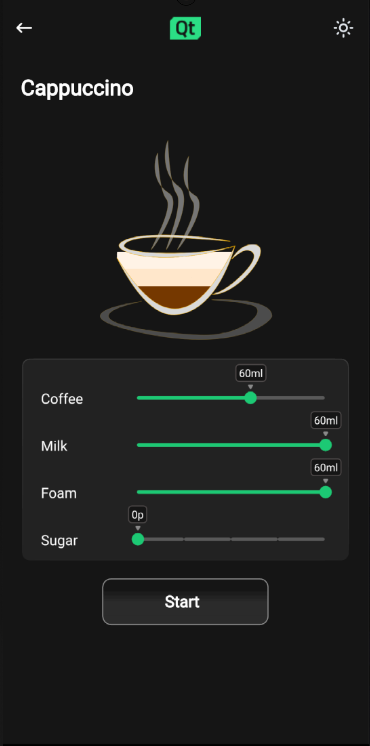

Coffee Machine
A Qt Quick application with a state-based custom user interface.
The coffee machine application lets you choose a type of coffee on the left side of the main screen. After selection, the app displays what the coffee blend will contain (ratio coffee/hot milk/milk foam). This can be modified with two sliders. When the brew has been started, the app shows an animated display of the brewing process, then returns to the start screen.
First the start screen Animationflowform is displayed, showing a sidebar with several types of coffee, and an empty cup on the right screen.
Selecting a coffee type - for example, cappuccino - triggers animation1 and animation2 in CoffeeButton.qml. On the right side, you will see the coffee blend you selected.
MouseArea {
anchors.fill: parent
onClicked: root.clicked()
onPressed: {
glow.visible = true
animation1.start()
animation2.start()
}
}
It also triggers cappuccinoButton.onClicked(), which sets the default mix for the coffee type selected:
cappuccinoButton.onClicked: {
sideBar.currentCoffee = qsTr("Cappucino")
sideBar.currentMilk = 7
sideBar.currentCoffeeAmount = 3.5
sideBar.coffeeSelected()
}

Coffee blend cappuccino
sideBar.coffeeSelected() sets applicationFlow.state to "selection"
If you click "Brew me a cup", choosingCoffee.brewButtonSelection.onClicked is triggered:
choosingCoffee.brewButtonSelection.onClicked: {
applicationFlow.state = "settings"
applicationFlow.choosingCoffee.milkSlider.value = applicationFlow.choosingCoffee.sideBar.currentMilk
applicationFlow.choosingCoffee.sugarSlider.value = 2
}
On the right side of the screen, you will see two sliders, one for the amount of milk, and one for sugar. They will have default values, but can be modified by the user.

If you click on Brew, choosingCoffee.brewButton.onClicked() is triggered, which displays a screen with the message "Please insert cup into tray".
choosingCoffee.brewButton.onClicked: {
applicationFlow.state = "empty cup"
}

Clicking on Continue starts the brewing of the coffee type you selected.
emptyCup.continueButton.onClicked: {
applicationFlow.state = "brewing"
brewing.coffeeName = choosingCoffee.sideBar.currentCoffee
brewing.start()
}
The brewing process is defined as follows in Brewing.qml:
BrewingForm { id: root function start() { animation.start() } signal finished() SequentialAnimation { id: animation PauseAnimation { duration: 1500 } PropertyAction { target: root property: "state" value: "coffee" } PauseAnimation { duration: 1500 } PropertyAction { target: root property: "state" value: "milk" } PauseAnimation { duration: 1500 } ScriptAction { script: root.finished() } } Behavior on cup.coffeeAmount { PropertyAnimation { } } Behavior on cup.milkAmount { PropertyAnimation { } } }
After completion, the application returns to the start screen.